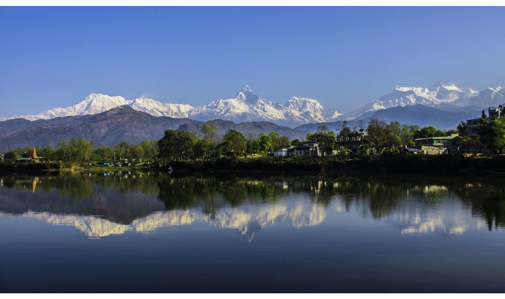

<html>
<head>
<title>Pokhara Virtual Tour</title>
<link rel="stylesheet" href="https://unpkg.com/leaflet@1.0.1/dist/leaflet.css" />
<meta name="viewport" content="width=device-width, initial-scale=1">
<link rel="stylesheet" href="http://www.w3schools.com/lib/w3.css">
<style >
	body{
		margin: 0;
		padding: 0;
	}
	#mapid{
		position: absolute;
		top: 0;
		bottom: 0;
		width: 100%;
	}

	.leaflet-popup-content-wrapper {
  background-color: grey
}
</style>
<script src="https://unpkg.com/leaflet@1.0.1/dist/leaflet.js"></script>
</head>
<body>
 <div id="mapid"></div>
 
 <script>
 

	var Temples=L.layerGroup();
	var Lakes=L.layerGroup();
	var Viewpoints=L.layerGroup();
	var Caves=L.layerGroup();
	var Museums=L.layerGroup();
	var Gumbas=L.layerGroup();
	var Pagodas=L.layerGroup();
 	
	var temple_icon = L.icon({iconUrl:"icon/temple.png",iconSize:[24,24]})
 	var lake_icon = L.icon({iconUrl:"icon/lake.png",iconSize:[24,24]})
 	var cave_icon = L.icon({iconUrl:"icon/cave.png",iconSize:[24,24]})
 	var viewpoint_icon = L.icon({iconUrl:"icon/viewpoint.png",iconSize:[24,24]})
 	var pagoda_icon = L.icon({iconUrl:"icon/pagoda.png",iconSize:[24,24]})
 	var museum_icon = L.icon({iconUrl:"icon/museum.png",iconSize:[24,24]})
 	var monastry_icon = L.icon({iconUrl:"icon/monastry.png",iconSize:[24,24]})


    var fewa=L.marker([28.2155,83.9461],{icon:lake_icon}).addTo(Lakes).bindPopup ('<h2> Phewa Lake</h2>  </a>  </br> </br> <FONT SIZE="+0.5" COLOR="white">Fewa Lake, the second largest lake in the kingdom, roughly measuring 1.5 km by 4 km, is the centre of all attractions in Pokhara. The enchanting lake is an idyllic playground. Brightly painted wooden boats and sailboats can be rented on reasonable cost around lakeside. The lake is neither deep (roughly 47 meters at most), the water is warm and swimming is pleasant. The eastern shoreline of the lake, popularly known as Lakeside or Baidam, consists of seemingly endless strip of lodges, restaurants, bookshops and souvenir shops. One of the fascinating parts of lakeside is the splendid view of the mountains, especially when the still water reflects the peaks, creating a double image.</FONT>',{'maxWidth':'800','maxHeight':'550','minWidth':'350'});
   


	var peace = L.marker([28.20103,83.94476],{icon:pagoda_icon}).addTo(Pagodas).bindPopup('<h1>World Peace Pagoda</h1> </br> </br> <FONT SIZE="+0.5" COLOR="white">This is a most beautiful place of Pokhara to hang out. A massive Buddhist Stupa is situated on top of a hill on the southern shore of Phewa lake. Besides being an impressive sight in itself, the shrine is a great vantage point, which offers a spectacular view of the Himalayas, Phewa Lake, and Pokhara city.</FONT><h4></h4>',{'maxWidth':'900','maxHeight':'950','minWidth':'350'});

	


	var pumdi=L.marker([28.20178,83.94016],{icon:viewpoint_icon}).addTo(Viewpoints) .bindPopup("<b>Pumdi View Tower</b>");


	var bahari=L.marker([28.20737,83.95356],{icon:temple_icon}).addTo(Temples) .bindPopup('<h1>Taal Bahari Temple</h1>  </br> <h4>It is built in the middle of Phewa lake dedicated to the Goddess Baraha, the universal protector is the boar manifestation of Goddess Shakti. She is often worshiped with the sacrifice of animals. Nobody forgets to visit this Barahi Temple.</h4>', {'maxWidth':'900','maxHeight':'950','minWidth':'350'});


	var binda=L.marker([28.23769,83.98410],{icon:temple_icon}).addTo(Temples) .bindPopup('<h1>Bindabashani Temple</h1>  <h4>Bindabasini temple or Bindhyabasini Mandir is of great religious importance to Hindus living in the Pokhara region. It is a vital hub of religious fervor. The temple itself is dedicated to the Hindu goddess Durga, who is Pokharas chosen guardian deity. Durga, also known as Shakti or Kali has numerous manifestations and at the Bindabasini temple she is seen as Bhagwati, a blood-thirsty aspect of the goddess. Durga appears in the form of a Saligram. A Saligram, according to Hindu mythology is an propitious stone. It is said that the temple was created after the goddess ordered king Khadag Bum Malla to set up a her statue here. The Bindabasini temple was then founded in BS 1845. Since its establishment, Bhagwati has been an object of worship here on a daily basis. Animal sacrifices are typically presented at the temple on Saturdays and Tuesdays. The Hindu festival of Dashain sees large numbers of believers coming to offer sacrifices at Binhyabasini Mandir. Indeed, there is little space for tourist during the festival of Dashain.<h4>',{'maxWidth':'900','maxHeight':'950','minWidth':'350'});


	var saran=L.marker([28.24399,83.95757],{icon:viewpoint_icon}).addTo(Viewpoints) .bindPopup('<h1>Sarangkot View Point</h1>  <h4>Sarangkot is situated at 1500 meters which are a former fort of Kaski Kings. An early morning drive to watch the sunrise is the best-recommended trip. Nowhere else in the world can one enjoy such a magnificent panorama up so close? Starting from Dhaulagiri in the extreme left, the view includes Annapurna South, 1st, 2nd, 3rd, 4th , and Machapuchhre and Lamjung. Sarangkot is here is the list of places to visit in Pokhara, Nepal but Sarangkot lies places to visit around the Pokhara. It is not far from town city of Pokhara.</h4></br>     ',{'maxWidth':'900','maxHeight':'950','minWidth':'350'});


	var devis=L.marker([28.19009,83.95924],{icon:viewpoint_icon}).addTo(Viewpoints) .bindPopup('<b><h1>Daevis Fall</h1> <h4>Daevi’s Fall is another place to visit in Pokhara Nepal. Locally known as Patale Chhango, is an awesome waterfall lying about 2 km south -west of Pokhara airport on the highway to Tansen. The water is the drainage of the Phewa lake and submerges into the earth creating a wonderful waterfall and one of natural wonderful of the valley.</h4></p>',{'maxWidth':'900','maxHeight':'950','minWidth':'350'});


	var mate=L.marker([28.21643,84.00729],{icon:monastry_icon}).addTo(Gumbas) .bindPopup('<h1>Matepani Monastry<//h1> <h4>There is a splendid Buddhist Monastry on the top of the small forested hill above Matepani east of Mahendra pool. It overlooks a large section of the Pokhara city and once there on find oneself lost in time amid the chanting Ramas, there colossal guardian images of the Buddha accompanying two other gurus and a prayer house with exquisitely carved columns and friezes.</h4>',{'maxWidth':'900','maxHeight':'950','minWidth':'350'});


	var mahe=L.marker([28.27168,83.97937],{icon:cave_icon}).addTo(Caves) .bindPopup('<h1>Mahendra Cave</h1><h4>Mahendra cave is also one of the major tourist attraction in Pokhara. It is located at Batulechaur, Pokhara just a few kilometers away from the town. As, the name suggests, it is named after the name of the Late king Mahendra Bir Bikram Shah Dev. The cave itself is amazing and we can see the various natural shapes and images of the various hindu god and goddess on the stone made of the lime. Here, for the safety measures, electricity is provided through out the cave and additional torch and emergency lights can be taken for the convinence. The area is surrounded by the community forest at the hillside and at the end of road there flows the small river called the Kali Khola.</h4>',{'maxWidth':'900','maxHeight':'950','minWidth':'350'});


	var bat=L.marker([28.26758,83.97570],{icon:cave_icon}).addTo(Caves) .bindPopup('<h1>Bat Cave</h1> <h4>Just a ten minutes walk from the Mahendra Cave, there lies a another cave named the Bat Cave. In Nepali language, it is also called Chameri Gufa. As the name suggests, it is named after the bats as there is the prevalence or the habitats of the bats over the cave wall and the ceilings. The cave is made of up the limestone and there is the provision of the torch and the emergency lights for the view of the cave. Also, there is the provision of the guides for the assistance. Apart from its attraction, it is also rich in greenery as the surroundings of  the cave is covered by the forest.</h4>',{'maxWidth':'900','maxHeight':'950','minWidth':'350'});


	var gup=L.marker([28.18922,83.95770],{icon:cave_icon}).addTo(Caves) .bindPopup('<h1>Gupteshwor Cave</h1> <h4>Gupteswar Gupha, a sacred cave, lies 2 km from Pokhara airport on the Siddhartha Highway leading southwest from the city. The entrance is right across from Devis Fall and the cave is almost 3 km long. It has some big hall-size rooms and some passages where you have to crawl on all fours. This cave holds special value for Hindus since a phallic symbol of Lord Shiva is preserved here in the condition it was discovered. An entrance fee of NRs. 50.00 is charged and taking pictures inside the cave is prohibited </h4>',{'maxWidth':'900','maxHeight':'950','minWidth':'350'});


	var kahu=L.marker([28.23955,84.01059],{icon:viewpoint_icon}).addTo(Viewpoints) .bindPopup('<h1>Kahun View Tower</h1> <h4>Hiking in Pokhara is very new and started only three decades ago. Around Pokhara, Kahun Danda hiking is another enchanting hill north of Pokhara and is only about two and a half hours from Mahendrapul downtown. Taking to your feet is the only way to see most mountain areas of pokhara but it is also the best way to see around village is rich in cultural diversity. Normally, this is one-day hiking route but if you would like to spend some time with the villagers and know about their life, Plan Holidays can make it a 2-day trip. It is located on the North-East of Pokhara city at 1444 m (4740 ft) and is at lower than Sarangkot. The trail starts just after crossing the newly built bridge at Seti Power house (Narayanthan) and goes by the army barracks at Phulbari across Mahendrapul before climbing slowly up a slope. You will enjoy a panoramic view of the Annapurna range and the wide Pokhara valley from Kahun Danda.</h4>',{'maxWidth':'900','maxHeight':'950','minWidth':'350'});


	var seti =L.marker([28.24564,83.98941],{icon:viewpoint_icon}).addTo(Viewpoints) .bindPopup('<h1>Seti George View Point</h1> <h4>The roaring Seti River passes right through Pokhara, but you wont see it unless you go looking. The river has carved a deep, narrow chasm through the middle of town, turning the water milky white in the process. The best place to catch a glimpse of the Seti River is the park just north of Old Pokhara near the Gurkha Museum.</h4>',{'maxWidth':'900','maxHeight':'950','minWidth':'350'});


	var moun=L.marker([28.18937,83.98106],{icon:museum_icon}).addTo(Museums) .bindPopup('<h1>International Mountain Museum</h1>	<h4> The theme of this museum is to cover the information and exhibits related with the Man, Mountain and Mountain activities around the world. Open daily (365 days in a year) from 9 am to 4:30 pm. Entrance: Foreigner : Nrs: 300.00, SAARC Citizen Nrs: 100.00, Nepalese Nrs: 50.00, Student(Nepalese) Nrs: 25.00 </h4>',{'maxWidth':'900','maxHeight':'950','minWidth':'350'});
	
var bounding_box= L.latLngBounds(L.latLng(28.1356,83.7907),L.latLng(28.3914,84.2075));
var mymap = L.map('mapid', {
	layers:[Temples,Pagodas,Gumbas,Caves,Museums,Lakes,Viewpoints],
	maxBounds:bounding_box
}).setView([28.2282,83.9821], 13.49);
 L.tileLayer('http://{s}.tile.osm.org/{z}/{x}/{y}.png',{
 	minZoom:12
 }).addTo(mymap);


	var overlayMaps = {
	" <span class='Temple'>Temple</span>": Temples,
    " <span class='Lake'>Lake</span>": Lakes, 
    " <span class='Viewpoint'>Viewpoint</span>": Viewpoints,
    " <span class='Cave'>Cave</span>": Caves,
    " <span class='Museum'>Museum</span>": Museums,
    " <span class='Gumba'>Monastry</span>": Gumbas,
    " <span class='Pagoda'>Pagoda</span>": Pagodas,
	};

L.control.layers(null,overlayMaps).addTo(mymap);
</script>
</body>
</html>
